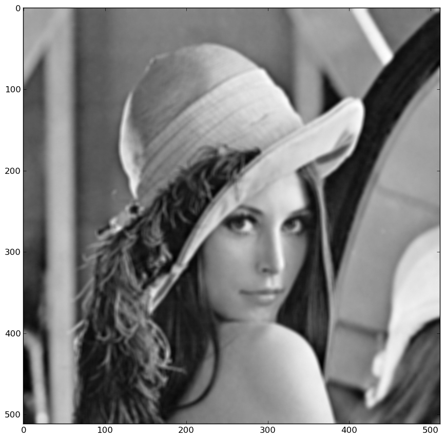

The following exemple can be found here. It shows how simple it is using linear_operators to perform simple deconvolution using the conjugate gradient algorithm.
The first line allows to call the script from the shell as an executable:
#!/usr/bin/env python
Then, you need to import the required Python packages:
import numpy as np
import scipy
import linear_operators as lo
Scipy is used in the script only to load an exemple image:
im = scipy.lena()Using matplotlib, you could take a look at the image using imshow for instance. Of course you need to import imshow from pylab if this is not already done. If your are using IPython with the --pylab option, the imshow import have already been done for you :
imshow(im)You would get this image :
Now, we start to use the linear_operator package to define a convolution operator:
kernel = np.ones((3, 3)) model = lo.convolve_ndimage(im.shape, kernel)This defines a convolution with an uniform kernel of shape 3x3 which is to be applied to an ndarray of the shape of the image.
To perform the convolution on the image, simply call the operator:
data = model(im)Alternatively, you can multiply the operator with the vectorized image:
data = model * im.ravel()The ravel method is required here as LinearOperators can only be multiplied to vectors. If an 2d array is passed, it is assumed to be a matrix and the matmat method is called, which is probably not what you want.
Adding noise to the data is quite simple thanks to numpy.random subpackage:
noise = 1e1 * np.random.randn(*data.shape) data += noiseTaking a look at the image, you would get something like this:

See how the image is blurred as compared to the original image.Now that we have our exemple data, we want to try deconvolving the image knowing the kernel. For this, we make use of quadratic deconvolution using the conjugate gradient algorithm provided in linear_operators. First, we need to define priors to regularize the inversion. Otherwise, the result would be way too noisy.
prior = [lo.diff(im.shape, axis=i) for i in xrange(im.ndim)] hypers = (1e1, 1e1)The hyperparameters "hypers" determines the importance to give to the priors relative to the likelihood. It is related to the amount of noise in the data.
Finally, we instantiate and call the conjugate gradient algorithm:
algo = lo.QuadraticConjugateGradient(model, data, prior, hypers) xe = algo()The output need to be reshaped as an image as algorithms work only on vectors since the rely on the matvec method of LinearOperators
xe.resize(im.shape)
Now, you can take a look at the result:
This is not perfect as quadratic deconvolution is not the best algorithm to perform deconvolution. In particular you can see ripples close to the edges of the images.
However this simple exemples illustrate how easy it is with the linear_operators package to set up a simple deconvolution script in about 15 lines of code.